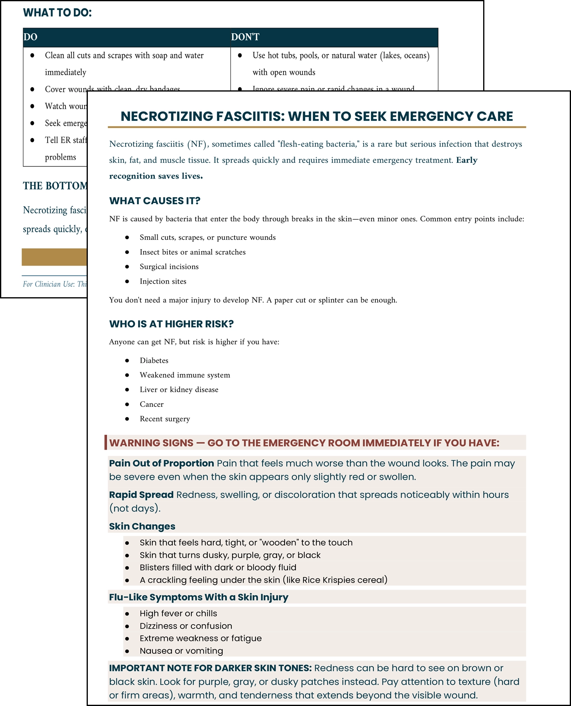
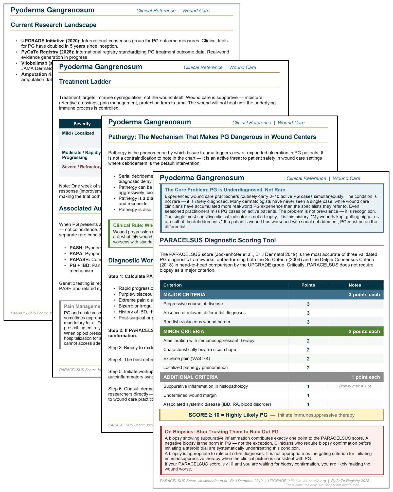
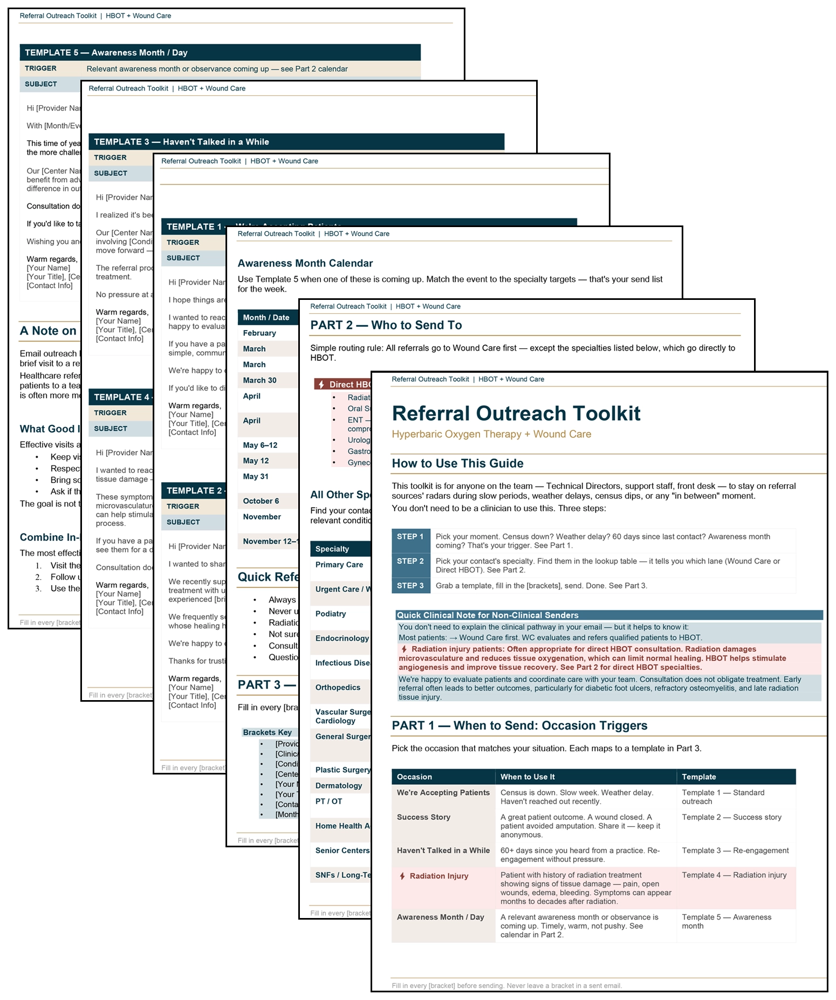

Matthew A. Davis, MBA
Operations & Corporate Development · Systems Design · Strategic Communications · Independent R&D
Tools · Shared Health Services
Patient & Clinician Education
Material written for people outside the center: patients and their families, and the physicians who refer them.





